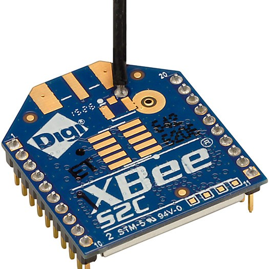
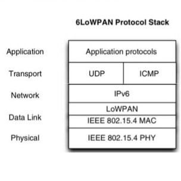
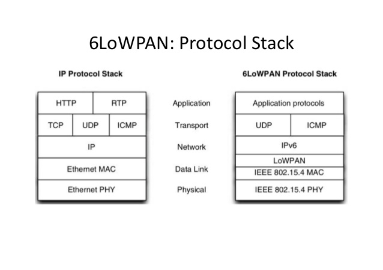
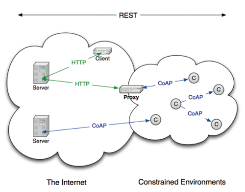

배경
저전력 무선 네트워크의 핵심 기술로 높은 주목을 받고 있는 ZigBee 기술은 open standard, 즉 누구나 자신의 목적에 맞게 사용할 수 있는 표준 기술이 아니며 "ZigBee Alliance"에 가입한 멤버에 한해서 기술 사용이 가능합니다.
View details »

6LoWPAN
이에 저전력 무선 네트워크 기술을 개발하는 기업을 중심으로 이미 익숙하고 널리 활용되어 왔던 IP 프로토콜을 이용하여 IEEE 802.15.4 기반의 ZigBee 대응 기술을 개발하고자 하는 움직임을 보였고, 2005년 3월 62차 IETF 회의에서는 6LoWPAN WG(워킹그룹)를 창설하였습니다.
View details »
IPv6
6LoWPAN 워킹그룹은 LoWPAN 상에서 IPv6 패킷 전송 방안을 정의하는 것을 목표로 하고 있습니다. LoWPAN에서는 기존 네트워크들에 비해 상당히 많은 수의 노드가 배치되어야 하므로 큰 주소 공간과 자동 주소설정과 같은 기능을 내장하고 있는 IPv6가 적합합니다. 따라서 6LoWPAN에서는 IPv4는 고려하지 않습니다.
View details »

6LoWPAN
IP와 물리 계층의 중간 프로토콜
6LoWPAN 워킹그룹은 LoWPAN 상에서 IPv6 패킷 전송 방안을 정의하는 것을 목표로 하고 있습니다. 어떻게 하면 데이터 전송 속도가 느린 IEEE 802.15.4 기술을 통해 헤더 사이즈가 큰 IPv6 패킷을 효율적이고 안전하게 전달하고, 또 전달하고자 하는 장치들을 어떻게 검색할 것인지에 대한 내용을 연구하는 것입니다. 또한 IEEE 802.15.4 기술이 사용하는 MAC 주소를 이용하여 IPv6 자동 주소설정 기능을 어떻게 수행할 것인가에 대한 내용도 포함되어 있습니다.

CoAP
RFC 7252 Constrained Application Protocol
CoAP은 Internet of Things 시대의 저전력 고손실 네트워크 및 소용량 소형 노드의 통신에 특화된 웹 전송 프로토콜로서, 스마트 에너지와 건물 자동화 같은 M2M(machine-to-machine) 애플리케이션을 위해 설계되었습니다. 기본적으로 IPv6를 지원하는 6LoWPAN을 하위 프로토콜로 생각하고 있으므로 CoAP 표준의 주요 목표는 전달하는 메시지 자체를 가능한 작게 하여 메시지 Payload가 단편화되는 현상을 막으면서 필요로 하는 이벤트 요청 응답, Resource Discovery를 가능하게 하는 것입니다.